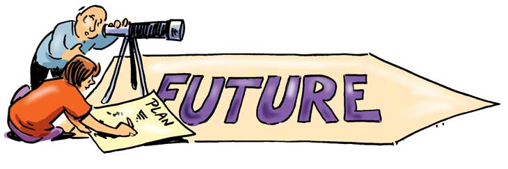

6 Ways To Plan Your Future
September 30, 2021 by Tia-Jay Davis
As you grow older and wiser, your future weighs on your mind more each day.
You may feel as if everyone else has their life together,
while yours is falling apart.
You question your intuition. You wonder if you are a failure.
Will I be able to achieve all that I have set out to ?
Will I be able to afford the life I would like to live ?
Well here are a few steps you can follow to ensure that you are on your way to securing your future.

- Explore key questions about the future you want.
- Stop thinking of the past and focus on the present and the future.
- Find your passion.
- Trust your instincts.
- Write down your goals and keep them visible.
- Be proud of yourself.
The next time you find yourself concerned with the future, visualize yourselflooking down at your own tombstone,
lamenting about how much time you squandered worrying about what might happen someday.
The question is, do you really want to experience such feelings of regret after you depart this earth?
Of course you don't!!
So one thing you can do when you find yourself feeling fearful or anxious about
the future is to recall that image of your own gravestone,
and use it as a reminder to keep your thoughts
focused in the present moment.
How To Make The Best Lasagna
September 30, 2021 by Tia-Jay Davis
Ingredients
9 lasagna noodles
1-1/4 pounds bulk Italian sausage
3/4 pound ground beef
1 medium onion, diced
3 garlic cloves, minced
2 cans (one 28 ounces, one 15 ounces) crushed tomatoes
2 cans (6 ounces each) tomato paste
2/3 cup water
2 to 3 tablespoons sugar
3 tablespoons plus 1/4 cup minced fresh parsley, divided
2 teaspoons dried basil
3/4 teaspoon fennel seed
3/4 teaspoon salt, divided
1/4 teaspoon coarsely ground pepper
1 large egg, lightly beaten
1 carton (15 ounces) ricotta cheese
4 cups shredded part-skim mozzarella cheese
3/4 cup grated Parmesan cheese

Directions
- Cook noodles according to package directions; drain.
Meanwhile, in a Dutch oven, cook sausage, beef and onion
over medium heat 8-10 minutes or until meat is no longer pink,
breaking up meat into crumbles.
Add garlic; cook 1 minute. Drain.
- Stir in tomatoes, tomato paste, water, sugar, 3 tablespoons parsley,
basil, fennel, 1/2 teaspoon salt and pepper;
bring to a boil. Reduce
heat;simmer, uncovered, 30 minutes, stirring occasionally.
- In a small bowl, mix egg, ricotta cheese and remaining parsley and salt.
- Preheat oven to 375°. Spread 2 cups meat sauce into an ungreased 13x9-in. baking dish.
Layer
with 3 noodles and a third of the ricotta mixture.
Sprinkle with 1 cup mozzarella cheese and
2 tablespoonscheese.
Repeat layers twice.
Top with remaining meat sauce and cheeses (dish will be full).
- Bake, covered, 25 minutes. Bake, uncovered, 25 minutes longer or until bubbly. Let stand 15
minutes before serving.